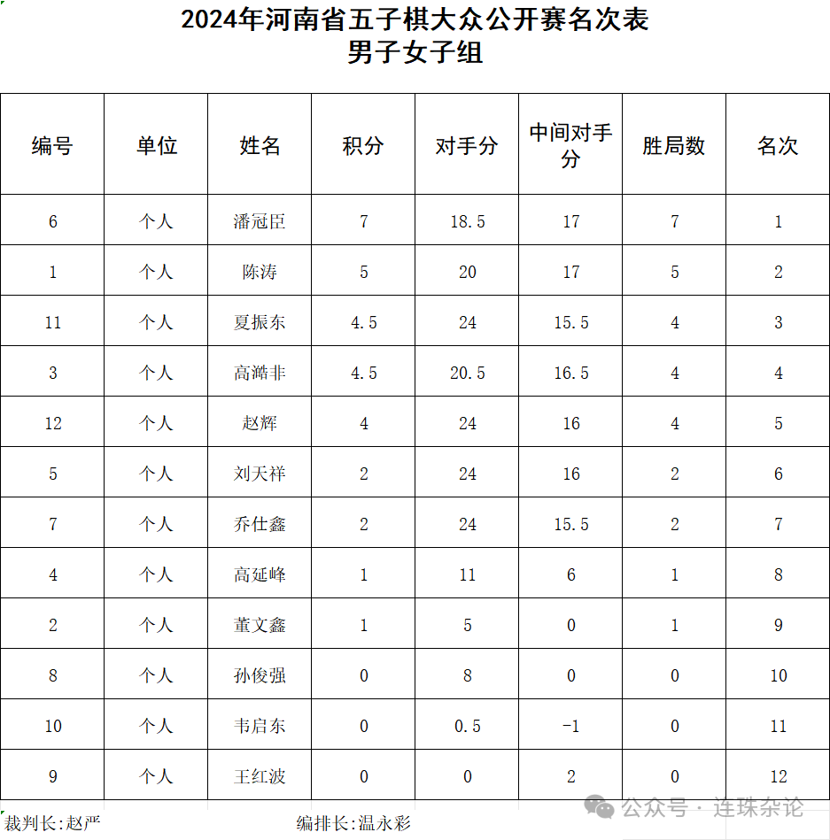
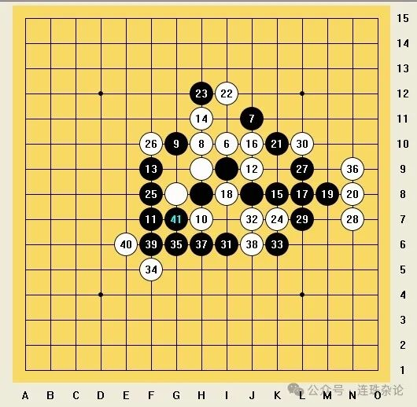
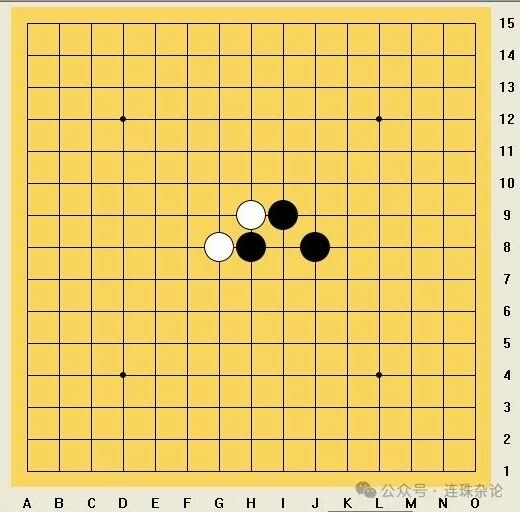
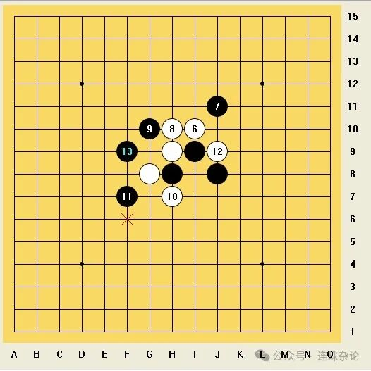
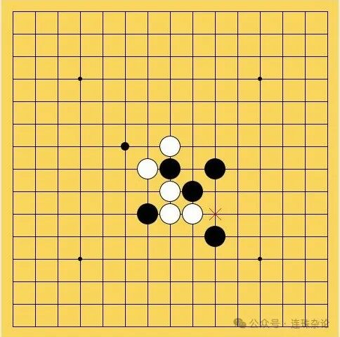
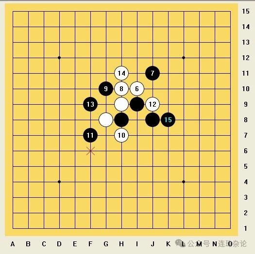
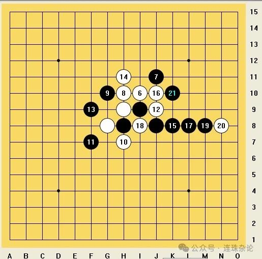
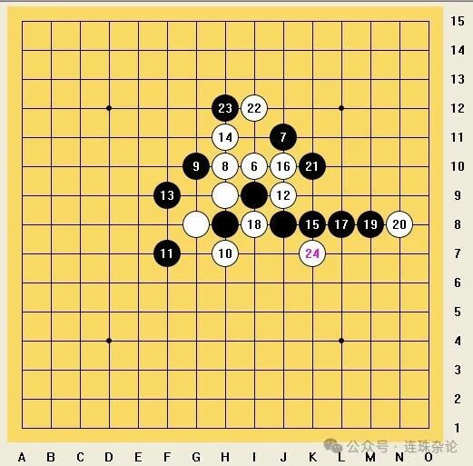
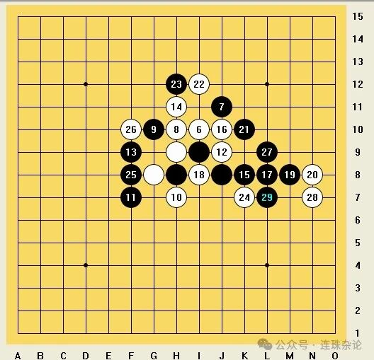
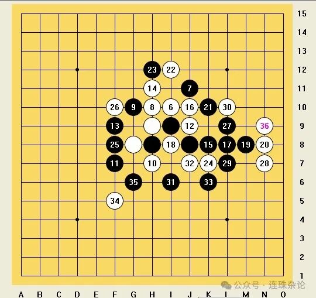

赛后记｜2024河南省五子棋公开赛棋评①
脱谱必胜 攻防大战
7月21日，2024河南省五子棋大众公开赛专业组在郑州万达坊落幕。我幸运地以七轮全胜的成绩获得冠军。本次专业组使用塔拉山口-10规则，时限为每方30分钟包干。我认为此次比赛，我的发挥比较一般，暴露出了许多一贯存在的问题，可以认为是有禁手比赛中最差的一次。抛去39度高烧的山东省青少年锦标赛不看，这次比赛我们的全盘狗一狗二率（指全盘不允许出现漏勺，在开局正确的前提下全盘都是卡塔狗软件的一选点和二选点）是最低的，六盘超过十手的有效对局中只出现了三盘。就拿近三次比赛而言，山东省智运会和河南省等级赛中，我们的全盘狗一狗二率分别为60％与71％。但对局仍然精彩，我从自己台次的对局中选择了几轮，与大家分享。后续还会分享一些本次比赛其他人的对局。

每盘都很精彩，尤其第一轮和第五轮。这篇让我们先从常规的两打开局说起，慢慢深入。
第四轮
黑：潘冠臣
白：高澔非
开局：金星-常规白4-第二打
交换：+--++
结果：黑胜

(实际对局时双方视角都非本谱视角，为方便观看，调整为了常规视角)
高澔非是一位计算力较强的棋手，具有丰富的比赛经历，在本次比赛的其他对局时，他在复杂的局面中计算到了一个长达12步（双色23步）的VCT。其长相也与山东的刘洋相似。对方开局下黑1，我交换后对方走直止2，我黑3开出金星局，对方思考后白4选择常规开局，我交换后对方黑5走经典二打，考我必胜。

金星二打是典型的必胜局，其定式“流浪者的梦”业已被很多人熟知。但我并不打算走这条必胜，一是线路太长，二是视角不好（如下图所示），三是没有新意。我自然交换过来执黑，以下白6到黑10都是正常定式。黑11我选了一个新时代的走法，此11应该也是最强的了。我只知道此走法很好，但后面的具体线路并不太了解。


对方看到这个黑11，也是陷入了长考。最终对方白12选择了做两个活二。我短考后认为这个白12看似一子通两路，实则没有后续，无法形成有效的VCT。虽然现在白方难以实施有效的进攻，但盘面上还是有三个活二，所以我选择缓一手，黑13堵住了一个活二，同时反做了两个活二。我赛后复盘认为，此13虽然不错，但是还是稍保守了些。

对方看到了这个13后感到诧异，或许是因为我没有防御对方白12形成的两个活二。对方短考后直接白14活三发动进攻，我验算后再次确认此处白并没有VCT，于是黑15堵下，同时反做了一个跳眠三。

对方白16造了一个一步四三杀，盘面看起来危机四伏。此时我已用掉了大半时间，愈发紧张起来。起初我计算了直接挡四三点的后续，但随着周围台次陆续结束，许多人过来围观，我倍感压力，无法算尽，于是决定严防，启动黑17、黑19两步跳冲四后，黑21利用跳活三防住。对手看到这套走法，也不由自主地点了点头表示认可。

这样走虽然继续保持着必胜，但弊端是，下一步白在上方冲四，可以造出长连的棋筋。但是白22没有选择造长连，而是在上方做了个短VCF，我黑23自然要挡住。接下来白24在下方挡了我一手，攻防易手，现在换我进攻。

此时对方和我大概都只剩下了三四分钟左右。紧接着我黑25先在左方活三，白26挡后我黑27在右侧活三。白28挡后我黑29便执行了剩余的VCT步数，此时白在左侧并没有VCF，因为我可以自然反。

后续白造出长连，但于事无补，我便执行了VCF。实际上白造长连后选择反活三堵住，已经送我了i4处的一步四三杀，但当时我并没有看到，而是走了个更长的VCF。对方看到这一情况后，也非常利落地投了子。这种情况在第二轮的时候就已做过，以前的对局中也出现过，当短杀和长杀同时出现时，我很可能先算到较长的杀而漏掉了较短的杀。

赛后复盘发现，虽然我这盘棋中部分步数还是保守，但仍然都是卡塔狗的一选点和二选点，质量尚可。本盘的计算强度总体还是不大的，第四轮的这一胜利也为夺冠指明了方向。